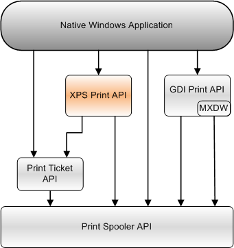

[The XPS Print API is not supported and may be altered or unavailable in the future. Client applications should use the Print Document Package API instead.]
Provides an interface to the print spooler. Applications can use this API to send XPS documents to a printer.
This section contains information about the following topics.
About the XPS Print API
Using the XPS Print API
XPS Print API Reference
Native Windows applications that create XPS documents, such as by using the XPS Document API, can use the XPS Print API to send XPS document content to a printer.
The following diagram shows the relationship of the XPS Print API to the other Print APIs that a native Windows application can use.

Â
Â